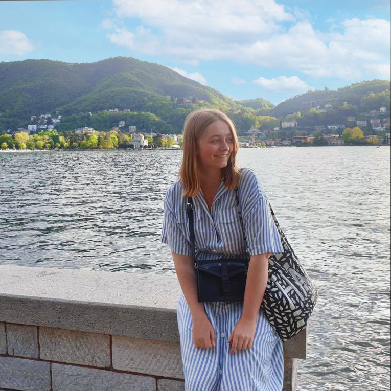

Om mig

Mit navn er Sasia Dagnoli og jeg er 21 år gammel. Jeg studerer multimediedesign på KEA - Københavns Erhversakademi.
Jeg har altid haft svært ved at vælge, hvad jeg ville studere.
Men i 10. klasse skulle vi lave en opgave, som skulle handle om hvad vi ville studere. Her lavede jeg min opgave om multimediedesigner uddannelsen på KEA.